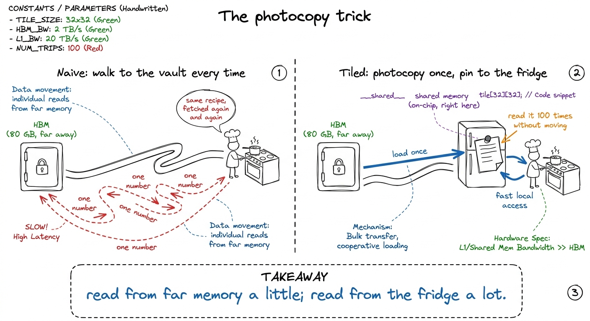
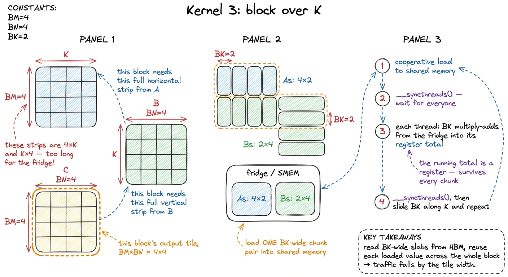
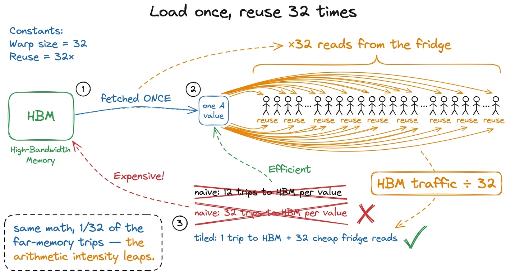

Teaching Kernel 3: the shared whiteboard
By the end of this chapter you can stand at a whiteboard and teach why a block of threads should copy a small tile of data into a shared scratchpad, compute against it many times, and only then throw it away — and why that one idea is the single biggest turning point in the whole GEMM ladder. You start knowing nothing about shared memory. You leave able to draw the reuse, prove the traffic drop with a napkin, and explain why we walk across K in chunks. Let's build it slowly.
This is the third kernel. In the last two, students made each access to global memory efficient — coalescing packed the reads tightly. But a problem stayed standing: we were still reaching out to far-away memory for the same numbers, over and over. This chapter fixes that. It is the first kernel that changes the algorithm, not just the layout — and where the real climbing begins.
The one thing that's wrong, in plain words
Picture the naive kernel. Every thread that needs a number goes and fetches it from the big, slow, far-away memory — the HBM, the 80 gigabytes of storage sitting off to the side of the chip. Here is the crime: the same number gets fetched again and again by different threads, each making the long trip separately.
Think about one number in matrix A, sitting in row 5. Every output cell along row 5 of the answer needs that number. If there are 1000 columns in the answer, that one number is needed 1000 times — and the naive kernel makes 1000 separate long trips to fetch it. The data was reusable. We just never kept it close by.

figure rendering · The whole chapter in one picture: stop walking to the vault; pin a phoWhat the "fridge" actually is
The GPU gives us the right hardware for the photocopy. Every Streaming Multiprocessor — an SM, one of the chip's ~132 worker-neighborhoods — has a small slab of blisteringly fast on-chip memory called shared memory (SMEM). It's a scratchpad: nothing appears in it unless you copy it there, and nothing leaves until you overwrite it. That's the difference from a cache — a cache guesses what to keep; a scratchpad does exactly what you tell it.
How fast is the fridge versus the vault? On an H100, the far HBM delivers about 3.35 TB/s. Shared memory delivers about 31 TB/s — roughly 9× faster, and much closer, so the wait is far shorter too. And a whole block of threads shares one fridge, so they can all read the same photocopy.
The tiny by-hand version
Let's shrink everything to numbers you can do on the board. Forget 1000×1000. Take a 4×4 times 4×4 matmul, and give one block of threads the job of computing the whole 4×4 answer tile. Call the tile size BM = BN = 4.
To compute that 4×4 answer, the block needs the first 4 rows of A and the first 4 columns of B. But here's the thing students must feel: those aren't little squares. If K (the shared inner dimension) is big — say 4 for our toy, but thousands in real life — then "4 rows of A" is a long horizontal strip 4 × K, and "4 columns of B" is a long vertical strip K × 4. Long strips don't fit in the little fridge.
So we chop K into chunks. Pick a chunk width BK = 2. Now we walk across K in steps of 2:
- Step 1: copy the
4×2left slab ofAand the2×4top slab ofBinto the fridge. Every thread does 2 multiply-adds against the photocopy, adding into its running total. - Step 2: slide 2 further along
K. Copy the next4×2slab ofAand next2×4slab ofBinto the fridge (overwriting the old photocopy). Do 2 more multiply-adds each, adding to the same running total.
After both chunks, every thread has summed all K = 4 products for its cell. Done.
C[0][0], which is row 0 of A dotted with column 0 of B, and row/column are [1, 2, 3, 4] and [1, 1, 1, 1]. Chunk 1 (k = 0,1): partial = 1·1 + 2·1 = 3, stored in the thread's register. Chunk 2 (k = 2,3): partial += 3·1 + 4·1 = 7, so the register now holds 10. The photocopy on the fridge got replaced between chunks — but the running total lived safely in the thread's own pocket (a register) the whole time. That "the total survives, the tiles get overwritten" is the beat students most need to see.
figure rendering · The technical translation of the fridge trick: the K loop is chopped iWhy we block over K — the part that confuses everyone
Say this plainly, because it's the conceptual heart of the chapter: we don't block over K because it's elegant. We block over K because the strips don't fit.
The block's output tile (BM × BN) is small and chosen. But the ingredients for that tile — the rows of A and columns of B — stretch the full length of K, which in a real model is thousands wide. A 4 × K strip of A at K = 4096 will never fit in a fridge sized for kilobytes. So we bring in the ingredients a slice at a time: grab a BK-wide slab, use it completely, discard it, grab the next. Blocking over K is nothing more than "the pantry is too big to hold at once, so carry it in one armful at a time."
The real math, and the two barriers
Now show the code shape. Give each block a square tile — BLOCKSIZE = 32, so a 32×32 output tile and 32×32 fridge tiles. The loop over K in steps of BLOCKSIZE has three phases: load, wait, compute, then wait again.
__shared__ float As[BLOCKSIZE * BLOCKSIZE]; // the two fridge shelves
__shared__ float Bs[BLOCKSIZE * BLOCKSIZE];
float tmp = 0.0f; // this thread's running total (a register)
for (int bkIdx = 0; bkIdx < K; bkIdx += BLOCKSIZE) {
As[...] = A[...]; // 1. every thread copies ONE element into the fridge
Bs[...] = B[...];
__syncthreads(); // BARRIER 1: nobody reads until the fridge is fully stocked
for (int d = 0; d < BLOCKSIZE; ++d) // 2. compute against the photocopy
tmp += As[...] * Bs[...];
__syncthreads(); // BARRIER 2: nobody restocks until everyone's done reading
}
C[...] = tmp; // write the finished total back to HBM, onceThe two __syncthreads() are the whole game, and getting them wrong is the classic first bug. __syncthreads() is a "everybody wait here" line — every thread in the block must arrive before any thread continues.
- Barrier 1 stands between loading and computing. Threads load the fridge cooperatively — each thread copies one element. If a fast thread starts reading the photocopy before a slow thread has finished writing its part, it reads garbage. So: wait until the fridge is fully stocked.
- Barrier 2 stands at the bottom of the loop. A fast thread that races ahead to the next chunk must not overwrite the fridge while a slower thread is still reading the current photocopy. So: wait until everyone's done before restocking.
The payoff — count the bytes on a napkin
Here's the number that justifies the whole trick. Do it as arithmetic, out loud.
Without the fridge, to compute a 32×32 output tile, each element of A's tile gets pulled from far HBM once for every column it multiplies against — 32 times — and each B element once for every row — 32 times. Wasteful.
With the fridge, we copy each chunk into shared memory exactly once, then read it back 32 times during the inner loop (once per thread that shares that row or column). So every value fetched from HBM is now reused 32 times before we throw it away.

figure rendering · The napkin: one fetch, thirty-two reuses. Traffic falls by the tile wiWhy not just make the tile huge?
A sharp student will ask: if a 32-wide tile cuts traffic 32×, why not a 128-wide tile for a 128× cut? Great question — answer it, because it sets up the next kernel.
The fridge is small. Two 32×32 FP32 tiles cost 2 × 32 × 32 × 4 bytes = 8 KiB — comfortable. But shared memory is a per-SM resource, and it also decides how many blocks can live on an SM at once (this is occupancy — how much work is in flight to hide waiting). Push to 128×128 and one block wants 128 KiB of shared memory, which crowds out every other block and eventually smacks into the ~228 KiB ceiling. Bigger tile means less traffic but fewer blocks running, so less latency-hiding. The real craft is the balance.
1 There's a second, subtler cost inside the fridge itself: shared memory is split into 32 "banks," and if a warp's 32 threads all hit the same bank, the reads serialize — a bank conflict — and you lose most of the speed. Don't teach this yet. Flag it as "there's a gotcha we'll profile for later" and move on; it isn't the wall at this rung.
What the profiler says next
Compile and run and the number moves the right way — from about 8.5% of cuBLAS to about 12.8%, roughly a 50% speedup. Real money. But 50% is also a warning: if cutting HBM traffic 32× only bought 1.5×, then HBM was no longer the only bottleneck.
Point the profiler at it and the story is clear. The inner loop now does, for every two reads from the fridge, exactly one multiply-add. Two loads per one flop — the wrong ratio. We traded a "far-memory" bottleneck for a "fridge-issue" bottleneck: the calculators are now starved not for bytes from HBM, but for a better ratio of compute-to-load inside the block.
That's the bridge. This chapter's job was the idea — photocopy the page, pin it to the fridge, read it many times, walk to the vault only once — and the two barriers that keep the fridge honest. The next chapter squeezes even more reuse out, but only because this rung changed the whole game from "layout" to "algorithm."
You can now teach
- Shared memory as a fridge-photocopy: a small, ~9×-faster on-chip scratchpad the programmer fills by hand, versus the far, slow HBM vault — and why a cache guesses while a scratchpad obeys.
- The reuse idea, drawn: load a tile once, let the whole block read it many times, so each far-memory fetch is amortized across the block.
- Why we block over K: not elegance — the row/column strips are
K-long and don't fit, so we carry the ingredients inBK-wide armfuls, adding each slice into one running total. - The two
__syncthreads()barriers as "nobody eats until stocking is done" and "nobody restocks until eating is done," and why forgetting either corrupts the answer. - The napkin proof: same flops, but far-memory traffic falls by the tile width (~32×), and the arithmetic intensity leaps.
- The tile-size trade and the profiler's next verdict: bigger tiles cut traffic but crush occupancy, and after this rung the kernel becomes fridge-issue-bound — which hands you kernel 4.